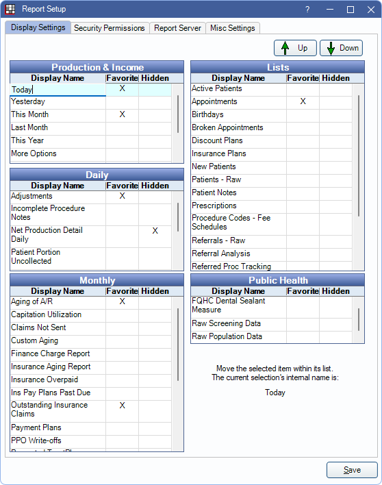

Report Setup: Display Settings
Favorite, hide, sort, and rename Standard Reports from the Display Settings in Report Setup.
In the Main Menu, click Setup, Reports.
Alternatively, from the Standard Reports window, click Setup in the upper left. Open the Display Settings tab.
Report display settings control the appearance of the Standard Reports window, including which reports are listed, the sort order of reports, and report name.
All available reports are listed, grouped by category, and sorted in the order they appear on the Reports window.
Up/Down: Select a report and click to move the order of the report in the category.
Display Name: Report name that is shown in Standard Reports and Standard Favorites. Click the Display Name cell and type a new name. The internal name of the report is shown in the lower-right of the setup window when a report is highlighted.

Favorite: Click in the Favorite column to show the report in the filtered reports menu.
- Blank: Report is not shown in the Standard Reports Favorites window.
- X: Report is shown in the Standard Reports Favorites window.
Hidden: Click in the Hidden column to toggle between hiding/showing a report.
- Blank: Report is shown in the Reports window.
- X: Report is not shown in the Reports window.
Three reports are hidden by default: Provider Payroll Summary, Provider Payroll Detailed, and Net Production Detail Daily.